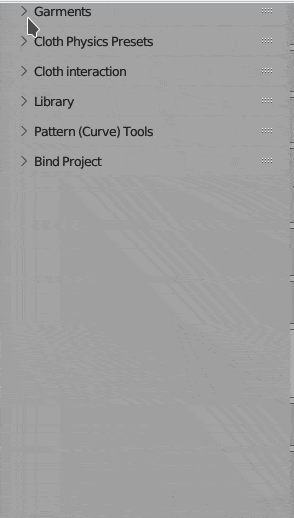
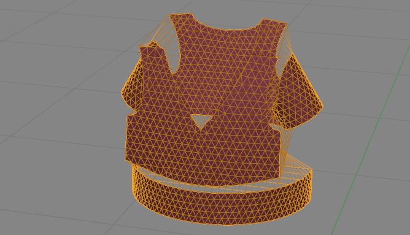
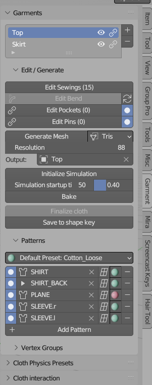
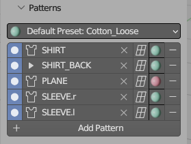
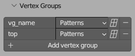

Garment Panel#
 All buttons in Garments Panel, are placed in the order you would usually use them, when starting new Project. Starting from top, your steps may be as follow:
- add sewings, pockets or pins to your garment
- generate Mesh at target resolution using Quads or Tris
- finally simulate output mesh using blender cloth sim
Edit Sewings#
You can connect any two segments from sewings patterns using this button. Later, when generating final mesh, Garment Tool will create connecting edges for each sewing.
Sewings Overlay#
You can now edith sewing patterns, while viewing garment sewings and segment lengths. This will help you match patterns to each other.
Edit Pockets#
Pocked - is 2d Curve that will be projected and sewed to target pattern. You can define which 2D Curve should be connected to which sewing pattern using this Button.
Edit Pins#
They are similar to Sewings, except they connect patterns with single edges. That edge can connect any point on pattern surface.
Generate Mesh#
Converts sewing patterns to 3d mesh (made from Triangles of Quads) that can be simulated using blender cloth sim. Vertex groups, UVs corresponding to each sewing pattern will be created.
- If you enabled Bend Modifier, of Lattice Modifier, at Sewing Patterns list, they will be attached to output mesh at this step.
- The generated mesh will be placed in 'Generated_'+garment_name collection. The mesh itself will be named using garment Name property - located at top of each garment panel.
- Density of generated mesh triangulation is described by the 'Resolution' parameter located below it.

Output#
Points to generated mesh (added in version 2.0.5 to help with proper exporting of presets to Garment Library, usually there is no need to change it)
Initialize Simulation#

Properties:
- The Initialize Simulation button will animate gravity strength from 0 to 10 m/s over a certain number of frames. This helps slow down the cloth's descent before it wraps around the character, making the animation more realistic and visually appealing.
- Simulation startup time frame at which gravity will reach 100% of its strength.
- Warmup Factor same operation is applied to 'Sewing force' and 'Shrinking' parameters. Theirs maximum value will be reached at:
Warmup Factor*Simulation startup timeframe.
Bake#
Same as Bake option, located in object Physics Tab (but without support for ESC-key cancel, cannot be fixed AFAIK). Bakes cloth simulation to cache.
Finalize cloth#
Creates new object with cloth simulation applied, uvs and vertex groups for each sewing pattern. It also cleans up the sewing edges, by collapsing, thus gives no gaps in between sewing patterns borders.
Save to Shape keys#
Save the current state of the simulation to a shape key. At same time the cloth modifier will be deactivated. Useful when you want to simulate other part of garment, without having to simulate current garment at same time.
Sewing Patterns#

Here's a list of 2D Bezier curve patterns. Patterns without any sewings attached to it won't be triangulated.
Note If curve 'Fill mode' is set to None (or curve mode is set to 3D) - then only outline of pattern will generated pattern.
Options for Sewing Patterns:
- disable/enable sewing pattern (round radio button).
- add Lattice modifier (not sure if I should keep it - using it breaks pattern dimensions)
- change sewing pattern physics preset (material)
Vertex Groups#
Note - Video is bit old, but vert groups work the same in latest version of Garment Tool.
List of additional vertex groups that can be added on simulated mesh. This gives user ability to assign vertex groups to multiple sewing patterns. For example you can create one vertex group that will include all stiffer sewing patterns, or vertex group that will be then deformed by lattice/bend modifier..
Options for Generated vertex groups:

- list of sewing patterns that will use given vertex group
- add lattice modifier to given vertex group
- add/remove vertex group